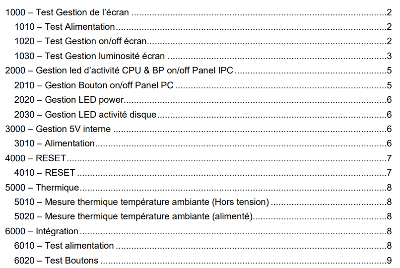
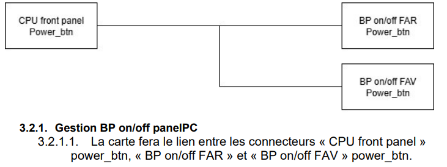
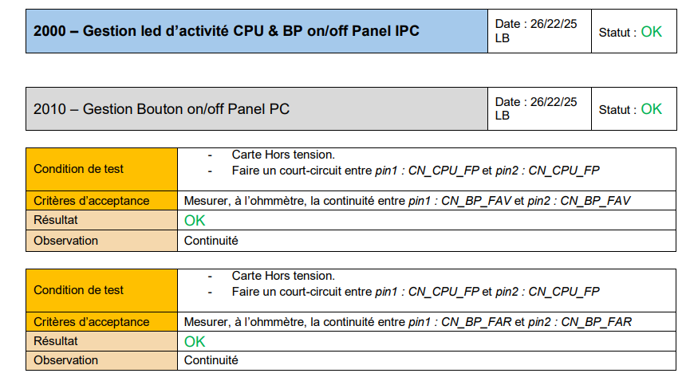
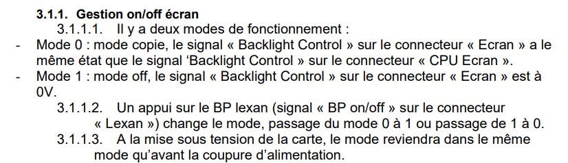
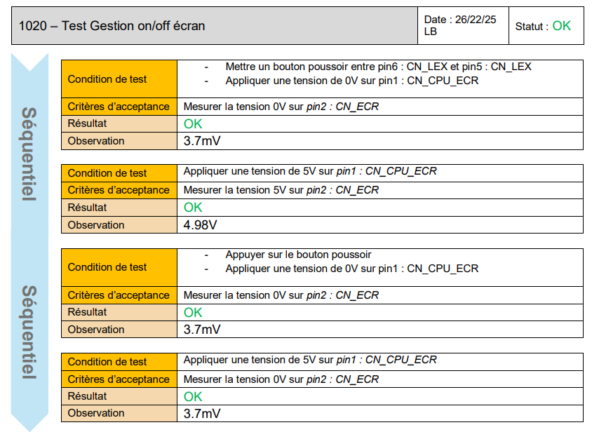
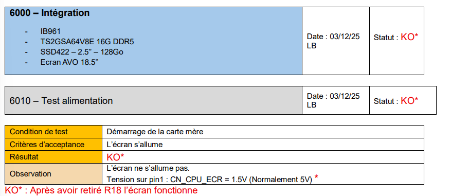

Produire une procédure d’essai pour valider la conformité d’un système
Lors de mon alternance chez IPO Technologie, j’ai réalisé un plan de test destiné
à vérifier la conformité d’un prototype de carte électronique de gestion écran,
à partir d’un cahier des charges et de documents techniques.
Contexte du projet
Dans le cadre de mon alternance chez IPO Technologie, j’ai travaillé sur un projet client
soumis à des contraintes de confidentialité très strictes. Le projet concernait une carte
électronique de gestion écran, développée à partir d’un cahier des charges établi entre
le client et les ingénieurs de l’entreprise.
Cette carte avait pour rôle de gérer plusieurs fonctions accessibles ou visibles par
l’opérateur. Elle permettait notamment la gestion de l’allumage de l’écran, le réglage
de sa luminosité, son alimentation, l’allumage du panel-PC, la LED de mise sous tension,
la LED d’activité disque, ainsi que la génération d’une tension interne de 5 V.
Objectif :
créer un plan de test permettant de vérifier que le prototype répondait bien aux fonctions
attendues dans le cahier des charges.
Document de travail
Pour des raisons de confidentialité, seuls des extraits anonymisés du cahier des charges
et du plan de test sont présentés.

Aperçu du sommaire du plan de test
Ma mission
Mon rôle a consisté à créer un plan de test permettant de vérifier que le prototype répondait
bien aux fonctions attendues dans le cahier des charges. Pour cela, je me suis appuyé sur
le cahier des charges, le schéma électronique et l’implantation de la carte.
À partir de ces documents, j’ai identifié les différentes fonctions à contrôler, puis j’ai
construit une procédure d’essai claire et exploitable par toute personne amenée à réaliser
les essais.
Matériel utilisé
Les essais ont été réalisés avec du matériel de mesure adapté afin de contrôler les tensions,
les continuités et les signaux nécessaires au bon fonctionnement de la carte.
Mesures électriques : multimètre, oscilloscope et alimentation de laboratoire.
Intégration : carte mère et écran réel afin de vérifier le comportement dans
un environnement proche de l’utilisation finale.
Organisation du plan de test
Le plan de test a été organisé par grands chapitres afin de faciliter son utilisation.
Chaque partie correspond à une fonction ou à un ensemble fonctionnel de la carte :
gestion de l’écran, gestion des boutons et LED du panel-PC, génération du 5 V interne,
reset, mesures thermiques et intégration.
Cette organisation permet à l’opérateur de retrouver rapidement le test à effectuer et
de comprendre à quelle fonction de la carte il correspond.
Gestion écranBoutonsLED5 V interneResetThermiqueIntégration
Structure des essais
Chaque sous-test a été rédigé de manière structurée. Pour chaque essai, j’ai indiqué les
conditions de test, le matériel ou les points de mesure à utiliser, les critères d’acceptation,
le résultat obtenu et une zone d’observation.
Cette présentation permet à l’opérateur de savoir précisément dans quel état doit se trouver
la carte, quelle action réaliser, quelle grandeur mesurer et quel résultat est attendu.
Saisie des résultats
Le plan de test a également été conçu pour servir de support de saisie pendant les essais.
L’opérateur peut renseigner le résultat obtenu, noter une valeur mesurée, ajouter une remarque
ou associer une capture d’oscilloscope si nécessaire.
Le but était de rendre les essais reproductibles, compréhensibles et faciles à vérifier
après réalisation.
Exemple 1 : gestion du bouton on/off du panel-PC
Un exemple concerne la gestion du bouton on/off du panel-PC. À partir de l’exigence du cahier
des charges, j’ai défini un test permettant de vérifier la continuité entre les connecteurs
concernés. Le plan de test précise les conditions à respecter, les points de mesure, le critère
d’acceptation attendu et le résultat obtenu.

Extrait du cahier des charges : fonction attendue pour la gestion
du bouton on/off du panel-PC.

Extrait du plan de test : vérification de la continuité entre les
points concernés, avec conditions de test, critères d’acceptation, résultat et observation.
Exemple 2 : gestion on/off de l’écran
Certains tests ont été conçus pour être réalisés indépendamment les uns des autres. Lorsque
ce n’était pas possible, notamment pour les tests séquentiels, l’ordre de réalisation a été
clairement indiqué.
Par exemple, pour la gestion on/off de l’écran, le comportement dépend de l’état précédent
du système. Le test a donc été présenté comme une séquence à suivre dans l’ordre afin de
vérifier correctement le passage d’un mode à l’autre.

Extrait du cahier des charges : description des différents modes
de fonctionnement de la gestion on/off de l’écran.

Extrait du plan de test : exemple de test séquentiel à réaliser
dans l’ordre pour valider le comportement attendu.
Détection d’une non-conformité
Le plan de test a également été utilisé après intégration de la carte dans le système complet.
Cette phase a permis de vérifier le comportement du prototype dans des conditions plus proches
de l’utilisation réelle.
Lors d’un test d’alimentation après intégration, la procédure a permis de mettre en évidence
une anomalie : l’écran ne s’allumait pas correctement et une tension mesurée n’était pas conforme
à la valeur attendue. Cette non-conformité a été documentée dans le plan de test, avec un résultat
KO et une observation associée.
Après analyse, un composant a été retiré afin de corriger le problème. Le même plan de test
a ensuite permis de vérifier le bon fonctionnement de la carte après correction.

Extrait après intégration : le plan de test a permis de détecter
une anomalie sur le prototype, puis de valider la correction après modification.
Intérêt du test d’intégration
Cette étape montre que la procédure ne servait pas seulement à contrôler des fonctions
séparées, mais aussi à vérifier le comportement de la carte dans son environnement réel.
Le plan de test a donc permis de passer d’une vérification théorique des fonctions
à une validation concrète du prototype intégré.
Bilan personnel
Ce travail m’a permis de produire une procédure d’essai complète, rigoureuse et ordonnée,
destinée à valider la conformité d’un système électronique. J’ai dû comprendre les fonctions
attendues, analyser les documents techniques disponibles, définir les essais nécessaires,
rédiger des critères d’acceptation mesurables et prévoir un support de saisie des résultats.
La procédure obtenue permet de réaliser les essais de manière reproductible, de noter les
résultats obtenus et de détecter d’éventuelles non-conformités.
Cette mission illustre directement la compétence “Produire une procédure d’essai pour valider
la conformité d’un système”, car elle repose sur la transformation d’exigences techniques en
tests concrets, organisés et exploitables pour contrôler la conformité d’une carte électronique
par rapport au cahier des charges.
IPO Technologie – Alternance BUT GEII / Parcours ESE